Getting Started
The ReEDS model source code is available at no cost from the National Laboratory of the Rockies (NLR). The ReEDS model can be downloaded or cloned from https://github.com/ReEDS-Model/ReEDS.
New users may also wish to start with some ReEDS training videos which are available on the NLR YouTube channel.
Installation Guide
Windows Command Line
The setup and execution of the ReEDS model can be accomplished using a command-line interpreter application and launching a command line interface (referred to as a “terminal window” in this documentation). For example, initiating the Windows Command Prompt application, i.e., cmd.exe, will launch a terminal window Fig. 1. (Note: If you encounter issues using command prompt, try using anaconda prompt or a git bash window)
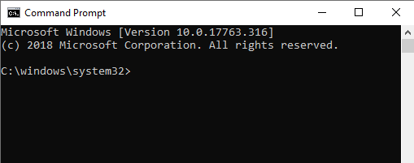
Fig. 1 Screenshot of a Windows Command Prompt terminal window
SUGGESTION: use a command line emulator such as ConEmu (https://conemu.github.io/) for a more user-friendly terminal. The screenshots of terminal windows shown in this document are taken using ConEmu.
IMPORTANT: Users should exercise Administrative Privileges when installing software. For example, right click on the installer executable for one of the required software (e.g., Anaconda3-2019.07-Windows-x86_64.exe) and click on “Run as administrator” (Fig. 2). Alternatively, right click on the executable for the command line interface (e.g., Command Prompt) and click on “Run as administrator” (Fig. 3). Then run the required software installer executables from the command line.
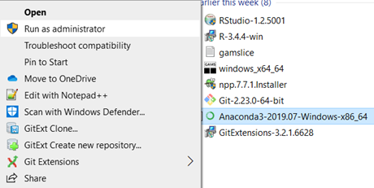
Fig. 2 Screenshot of running an installer executable using “Run as administrator”
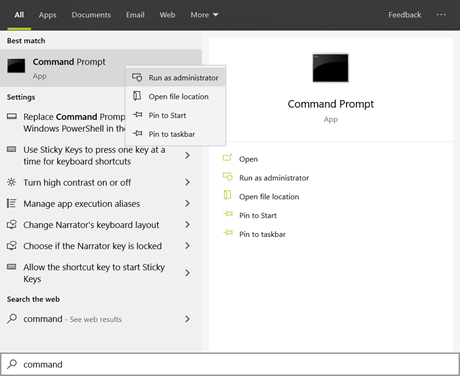
Fig. 3 Screenshot of running “Command Prompt” with “Run as administrator”
Python Configuration
Windows
Install Anaconda: https://www.anaconda.com/download.
IMPORTANT : Be sure to download the Windows version of the installer.
Add Python to the “path” environment variable:
In the Windows start menu, search for “environment variables” and click “Edit the system environment variables” (Fig. 4). This will open the “System Properties” window (Fig. 5).
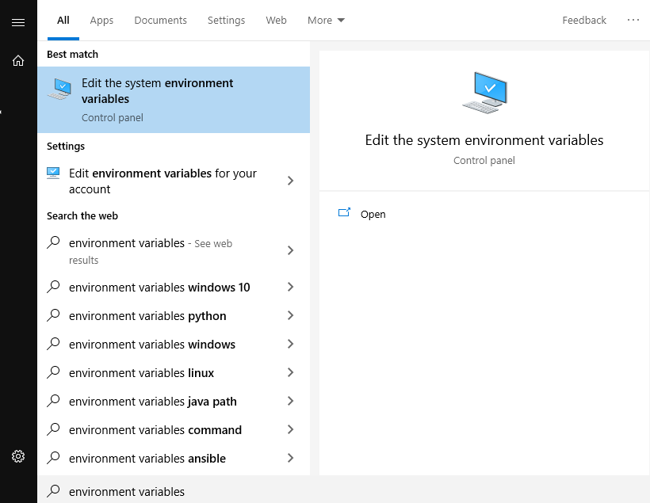
Fig. 4 Screenshot of a search for “environment variables” in the Windows start menu
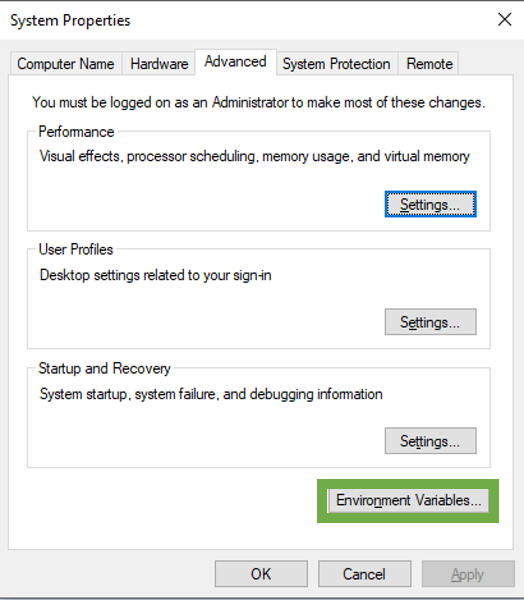
Fig. 5 Screenshot of the “System Properties” window.
Click the “Environment Variables” button on the bottom right of the window (Fig. 5). This will open the “Environment Variables” window (Fig. 6).
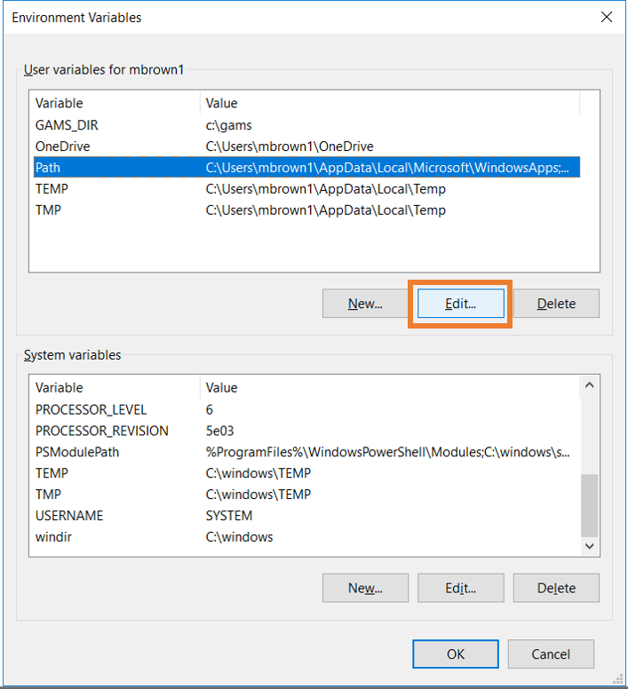
Fig. 6 Edit the Path environment variable
Highlight the Path variable and click “Edit” (Fig. 6). This will open the “Edit environment variable” window (Fig. 7).
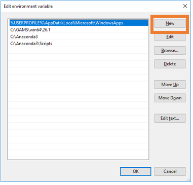
Fig. 7 Append the Path environment
Click “New” (Fig. 7) and add the directory locations for \Anaconda\ and \Anaconda\Scripts to the environment path.
IMPORTANT : Test the Python installation from the command line by typing “python” (no quotes) in the terminal window. The Python program should initiate (Fig. 8).
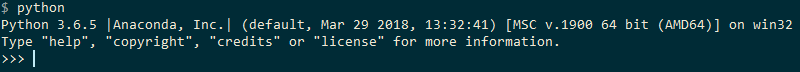
Fig. 8 Screenshot of a test of Python in the terminal window
MacOS
Download the latest version of Anaconda: https://www.anaconda.com/download
IMPORTANT: Make sure to download the Intel version even if your machine has an Apple Silicon / ARM processor.
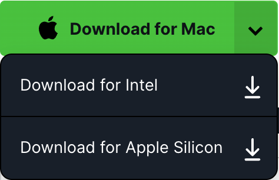
During Installation, select to install Anaconda for your machine only.
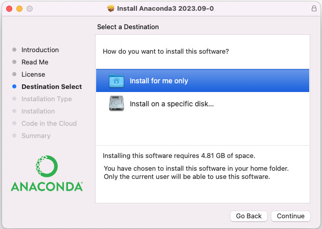
Fig. 9 Image of Anaconda Install Mac
To have the installer automatically add anaconda to PATH, ensure that you’ve selected the box to “Add conda initialization to the shell”
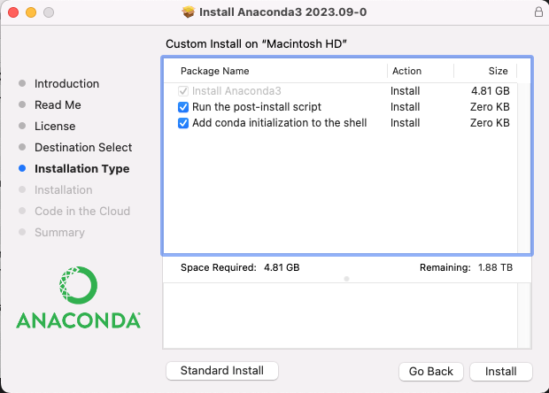
Fig. 10 Image of Anaconda Install Mac - Customize Installation Type
To validate Python was installed properly execute the following command from a new terminal (without quotes): “python”
Python should initiate, looking similar to Fig. 8.
Conda Environment Setup
It is highly recommended to run ReEDS using the conda environment provided in the repository. This environment (named reeds2) is specified by the environment.yml and can be built with the following command - make sure you navigate to the ReEDS repository from terminal first:
conda env create -f environment.yml
You can verify that the environment was successfully created using the following (you should see reeds2 in the list):
conda env list
When creating the reeds2 environment locally, you might run into an SSL error that looks like: CondaSSLError: Encountered an SSL error. Most likely a certificate verification issue. To resolve this issue, run the following command before creating the environment again: conda config --set ssl_verify false.
GAMS Configuration
NLR uses GAMS versions 51.3.0 and 49.6.0; however, older versions might also work. A valid GAMS license must be installed.
Install GAMS: https://www.gams.com/download/ If installing on Mac: on the “Installation” page, click “customize” and ensure the box to “Add GAMS to PATH” is checked.
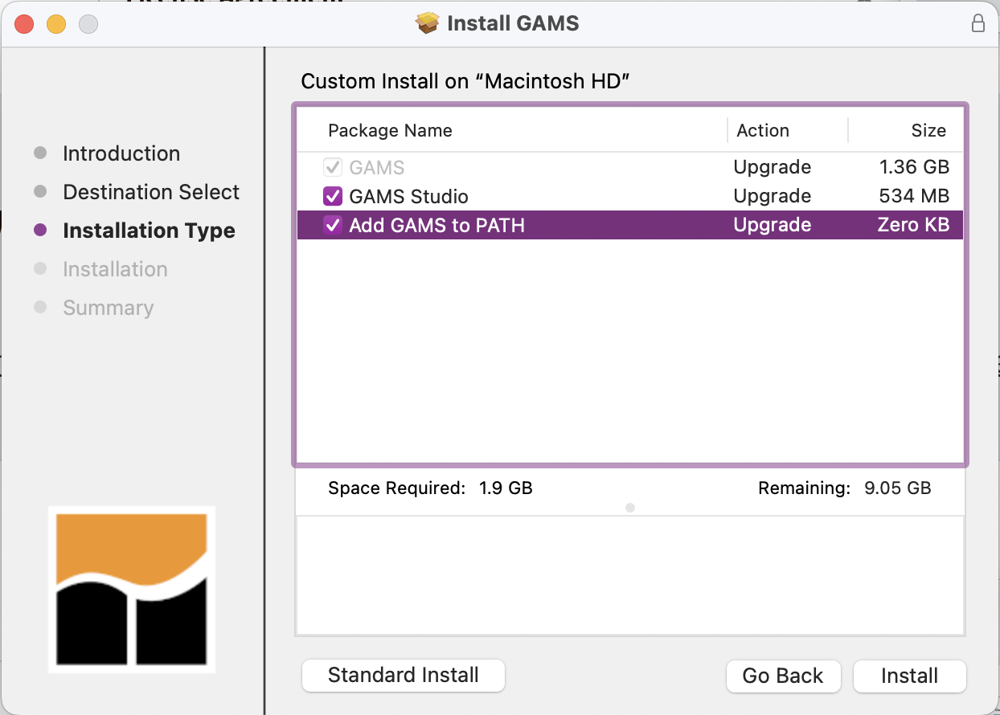
Fig. 11 Image of GAMS Install Mac
Add GAMS to the PATH environment variable. This step can be skipped if you’re on Mac and added GAMS to the path in step 1.
Follow the same instructions for adding Python to the path in the Python Configuration section above. Append the environment path with the directory location for the gams.exec application (e.g., C:\GAMS\win64\34).
Test the GAMS installation from the command line by typing
gams. The GAMS program should initiate (Fig. 12).
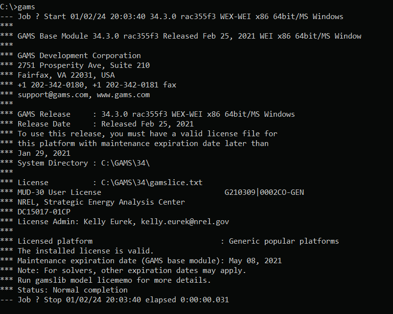
Fig. 12 Screenshot of a test of GAMS from the terminal window
Repository Setup
The ReEDS source code is hosted on GitHub at https://github.com/ReEDS-Model/ReEDS.
Install Git Large File Storage, instructions can be found here: Installing Git Large File Storage
From the Git command line run the following command to enable large file storage.
git lfs install
Clone the ReEDS-2.0 repository on your desktop. Alternatively, download a ZIP from GitHub (Fig. 13).
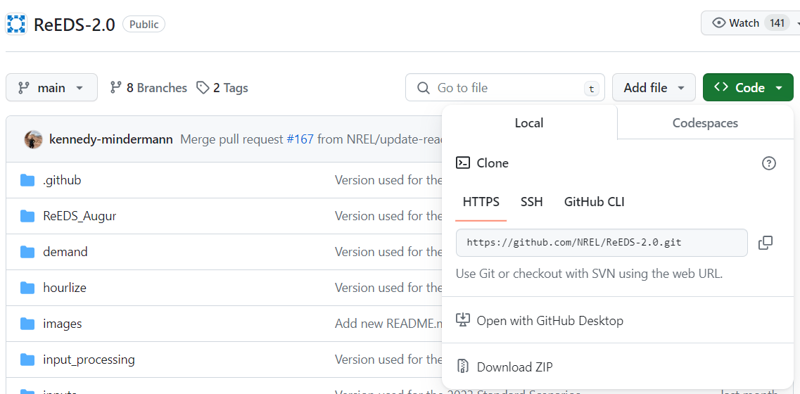
Fig. 13 Screenshot of GitHub links to clone the ReEDS repository or download ZIP of the ReEDS files
ReEDS2PRAS, Julia, and Stress Periods Setup
Julia will need to be installed and set up to successfully run the model since ReEDS uses stress periods by default. The recommended way to install Julia is via juliaup, the official Julia version manager, which makes it easy to install and switch between specific Julia versions. Julia 1.12.1 is the currently tested version across all platforms.
Step 1: Install juliaup
Install juliaup using winget from a terminal (Command Prompt or PowerShell):
winget install --id Julialang.juliaup
Alternatively, install from the Microsoft Store.
Run the following command from a terminal:
curl -fsSL https://install.julialang.org | sh
Follow the on-screen prompts. When installation is complete, open a new terminal session (or run source ~/.bashrc / source ~/.zshrc) so that juliaup is available on your PATH.
macOS and Linux users can also install via Homebrew:
brew install juliaup
Verify the installation was successful:
juliaup status
Step 2: Install and pin the tested Julia version
Install Julia 1.12.1 and set it as the default:
juliaup add 1.12.1
juliaup default 1.12.1
Confirm the active version:
julia --version
You should see julia version 1.12.1.
NOTE: If you need other versions of Julia for other purposes, you can run those other Julia versions using julia +channel (More info on the juliaup README). Or you can easily switch between versions with juliaup. For example, to switch to version 1.11.2, run juliaup default 1.11.2. To switch back to 1.12.1, run juliaup default 1.12.1.
Step 3: Instantiate the Julia environment
Navigate to the ReEDS directory from the command line, then run:
julia --project=. instantiate.jl
Troubleshooting Issues with Julia Setup
Windows
When setting up Julia on Windows, you may run into some issues when running julia --project=. instantiate.jl. The following steps can be followed to help resolve issues and get Julia set up successfully:
If you’ve used another version of Julia (from the reeds2 conda environment or a previous installation), you may get errors about conflicting manifest. To get past this, you can delete the
Manifest.tomlfile withrm Manifest.toml(on Unix systems) ordel Manifest.toml(on Windows systems).Manually install Random123
Re-run
julia --project=. instantiate.jl
If that doesn’t resolve the issue, try a clean install using juliaup:
Remove any previously installed Julia version managed by juliaup:
juliaup remove 1.12.1If Julia was installed outside of juliaup, uninstall it first:
winget uninstall juliaRe-install Julia
1.12.1via juliaup:juliaup add 1.12.1 && juliaup default 1.12.1Open the Julia interactive command line:
juliaEnter the Julia package manager by pressing
], then run the following commands:add Random123registry add https://github.com/JuliaRegistries/General.gitinstantiate
Leave the package manager by pressing Backspace or Ctrl+C
Run the following commands to finish setup:
import PRASimport TimeZonesTimeZones.build()
You can then leave the Julia command line by typing
exit()
macOS / Linux
If you experience issues, try the following:
Update to a known-good Julia version via juliaup:
juliaup add 1.12.1 juliaup default 1.12.1
Run
juliafrom the terminal to open the interactive command lineRun:
import Pkg Pkg.add("PRAS") Pkg.add("TimeZones")
Exit Julia with
exit(), then re-run:julia --project=. instantiate.jl
Running ReEDS
Quick Start:
Navigate to the ReEDS directory from the command line
Activate environment:
conda activate reeds2Run the model:
python runbatch.pyFollow the prompts for batch configuration
Check for a successful run:
Look for CSV files in
runs/[batchname_scenario]/outputs(a successful run should have 100+ csv files in the outputs folder)Verify the reporting folders (“reeds-report”, “reeds-report-reduced”) exist in the outputs folder
Understanding cases.csv
Switches are set in the cases.csv file and need to be specified by the user. The default case configuration is called “cases.csv”.
General structure:
Column A: Model switches
Column B: Switch descriptions
Column C: Available choices (note: this is not available for all switches)
Column D: Default values
Column E: Your case configuration
Note: all monetary switches should be entered in 2004 dollars.
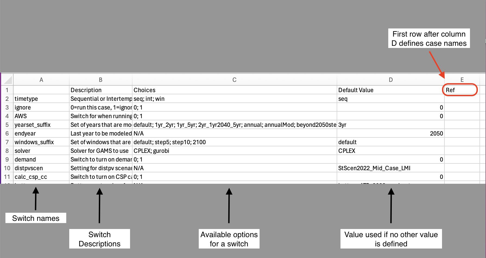
Fig. 14 Screenshot of cases.csv
Additional cases_*.csv files:
cases_standardscenarios.csv: contains all scenarios used for Standard Scenarios
cases_test.csv: contains a group of “test” scenarios that are used to test various capabilities
The user may also create custom case configuration files by using the suffix in the file name (e.g., “cases_smalltests.csv”). It should follow the same column formatting as cases.csv, but does not need to include all available switches.
Additional Resources
NLR has a YouTube channel that contains tutorial videos for ReEDS. The following are recommended videos for getting started with ReEDS:
Overview of ReEDS
Getting started with ReEDS: 2023 ReEDS Training for User Group Meeting
How to change inputs: Training on Changing and Adding Inputs
Debugging of ReEDS: Training on Debugging ReEDS
If you’d like practice with running a specific ReEDS scenario, you can walk through the ReEDS Training Homework.
Additional resources and learning:
NLR Specific Setup
See the Internal ReEDS Documentation. Information on Yampa and HPC setup can be found there.